항공산업기사 (2003-08-31 기출문제)
1과목: 항공역학
1. 비행기의 안정과 조종, 그리고 운동의 문제를 다루는데 있어서, 기준이 되는 좌표축은 비행기의 어느 것을 원점으로 하는가?
- 공기력 중심
- 공기 역학적 중심
- 무게 중심
- 기하학적 중심
(정답률: 74%)

2. 프로펠러의 수(B)와 반지름(R) 및 평균공력시위(c)가 주어질 때, 프로펠러의 디스크 면적에 대한 전체 깃 면적의 비인 고형비(σ)는 다음 중에 어떻게 정의 되는가?
- σ= c / 2πRB
- σ= Bc / 2πR
- σ= c / πRB
- σ= Bc / πR
(정답률: 27%)
3. 비행기의 항력을 표시하는 것 중에 등가유해면적(f)이라 하는 것은?
- 항력계수가 1.28 이 되는 평판이다.
- 항력계수가 1 이 되는 가상 평판의 면적이다.
- 항력계수가 0 이 되는 평판의 면적이다.
- 항력계수가 1.5 가 되는 가상 평판의 면적이다.
(정답률: 65%)
4. 프로펠러의 장착방식 중에서 가장 많이 사용되는 방식으로 프로펠러가 기관의 앞쪽에 부착되는 방식은?
- 견인식
- 추진식
- 이중 반전식
- 탠덤식
(정답률: 66%)
5. 그림과 같은 활공기의 양.항력 곡선에 대한 설명중 가장 올바른 것은?
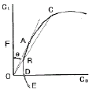
- 최장거리 활공비행은 A점 받음각으로 활공하면 좋다.
- 최장거리 활공비행은 C점 받음각으로 활공하면 좋다.
- 수평 활공비행은 D점 받음각으로 이루어진다.
- 수직 활공비행은 F점 받음각으로 이루어진다.
(정답률: 58%)
6. 정지 충격파 전후의 유동 특성이 아닌 것은?
- 충격파를 통과하게 되면 흐름은 압축을 받게된다.
- 충격파 전의 압력과 밀도는 충격파 후 보다 항상 크다.
- 충격파를 통과할 때 속도에너지의 일부가열로 변환된다.
- 충격파는 실제적으로 압력의 불연속이라 볼 수 있다.
(정답률: 74%)
7. 정속 프로펠러에서 출력에 알맞은 깃각을 자동적으로 변경시키는 장치는?
- 카운터 웨이터
- 3길 밸브
- 조속기
- 원심력
(정답률: 82%)
8. 공력평형 장치 중에서 특히 도움날개에 자주 사용되는 밸런스는?
- 앞전 밸런스
- 혼 밸런스
- 내부 밸런스
- 프리즈 밸런스
(정답률: 55%)
9. 뒤젖힘각을 가장 올바르게 설명한 것은?
- 25%C(코드길이) 되는 점들을 날개뿌리에서 날개끝까지 연결한 직선과 기체의 가로축이 이루는 각
- 날개가 수평을 기준으로 위로 올라간 각도
- 기체의 세로축과 날개의 시위선이 이루는 각
- 날개 끝의 붙임각을 날개 뿌리의 붙임각보다 크거나 작게 한 것
(정답률: 73%)
10. 음속에 가장 영향을 크게 주는 요소는 어느것인가?
- 습도
- 기압
- 점성
- 온도
(정답률: 84%)
11. 헬리콥터 회전날개의 조종장치 중 주기피치조종과 동시 피치조종을 해야 할 필요성이 있다. 이를 위해서 사용되는 장치는?
- 안정 바
- 트랜스미션
- 평형 탭
- 회전경사판
(정답률: 70%)
12. 힌지모멘트에 대한 내용으로 틀린 것은?
- 힌지모멘트 계수에 비례한다.
- 동압에 비례한다.
- 조종면의 크기에 비례한다.
- 조종면의 폭에 반비례한다.
(정답률: 73%)
13. 비행기에 단주기 운동이발생되었을 때 가장 좋은 방법은?
- 조종간을 자유롭게 놓는다.
- 조종간을 고정시킨다.
- 조종간을 당긴다.(상승비행)
- 조종간을 놓는다.(하강비행)
(정답률: 80%)
14. 고도 1500m에서 M = 0.7로 비행하는 항공기가 있다. 고도 12000m에서 같은 속도로 비행할때 Mach 수는? (단, 이때 a = 335m/s :고도 1500m에서 a = 295m/s :고도 12000m 에서)
- 약 0.6
- 약 0.7
- 약 0.8
- 약 0.9
(정답률: 63%)
15. 날개의 쳐든각을 가지고 있는 비행기가 왼쪽으로 옆미끄럼을 하게 되면?
- 왼쪽 날개 및 오른쪽 날개의 받음각이 동시에 증가한다.
- 왼쪽 날개 및 오른쪽 날개의 받음각이 동시에 감소한다.
- 왼쪽 날개의 받음각은 증가하고 오른쪽 날개의 받음각은 감소한다.
- 왼쪽 날개의 받음각은 감소하고 오른쪽 날개의 받음각은 증가한다.
(정답률: 69%)
16. 비행속도가 300m/sec인 항공기가 상승각 30°로 상승 비행시 상승율 즉, 수직방향의 속도는?
- 100m/sec
- 150m/sec
- 150√3m/ sec
- 200m/sec
(정답률: 55%)
17. 어떤 활공기가 1km 상공을 활공각 30°로 활공하고 있다.이 활공기의 대기속도가 100km/h일때 침하속도는?
- 5 km
- 20 km
- 25 km
- 50 km
(정답률: 50%)
18. 레이놀즈수는 유동현상에 있어서 관성력과 마찰력이 어떤 비로 작용하는가를 나타내는 무차원량이다. 다음식에서 옳은 것은? (단, c : 날개의 시위길이, ν: 동점성계수, V : 공기속도, ρ: 공기밀도, μ: 절대점성계수)
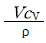
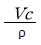
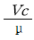
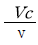
(정답률: 69%)
19. 수평비행할 때 실속속도가 80km/h인 비행기가 60° 경사선회할 때 실속속도가[km/h]는 약 얼마인가?
- 90
- 109
- 113
- 120
(정답률: 60%)
20. 헬리콥터에서 회전날개의 깃은 회전하면 회전면을 밑면으로 하는 원추의 모양을 만들게 된다. 이때 이 회전면과 원추 모서리가 이루는 각을 무슨 각이라 하는가?
- 받음각
- 코닝각
- 피치각
- 플래핑각
(정답률: 88%)
2과목: 항공기관
21. 2포지션 프로펠러의 깃각을 증가시키는 힘은?
- 엔진오일 압력
- 스피링
- 원심력
- 거버너 오일압력
(정답률: 63%)
22. 프로펄러중 저피치와 고피치 사이에서 피치각을 취하며 항상 일정한 회전속도로 유지하여 가장 좋은 프로펠러 효율을 갖게 하는 것은?
- 고정 피치 프로펠러
- 조종 피치 프로펠러
- 정속 프로펠러
- 가변 피치 프로펠러
(정답률: 69%)
23. 기어식 오일펌프의 사이드 클리어런스가 클 경우 어떻게 되는가?
- 과도한 오일 소모가 나타난다.
- 과다한 오일 압력이 생긴다.
- 낮은 오일 압력으로 된다.
- 오일펌프의 진동에 의한 고장이 나타난다
(정답률: 46%)
24. 왕복기관의 연료계통에서 증기폐색대 대한 설명으로 가장 올바른 것은?
- 캬브레터에서 연료의 증발을 말한다.
- 연료계통에 수증기가 형성되는 것을 말한다.
- 연료 펌프의 고착을 말한다.
- 연료가 캬브레터에 달하기전에 증발하고 연료공급이 멈추는 것을 말한다.
(정답률: 59%)
25. 윤활유 시스템에서 고온탱크형(Hot Tank System)이란?
- 고온의 스카벤즈 오일이 냉각되어서 직접 탱크로 들어가는 방식
- 고온의 스카벤즈 오일이 냉각되지 않고 직접 탱크로 들어가는 방식
- 오일 냉각기가 Scavange System에 있어 오일이 연료 가열기에 의한 가열방식
- 오일 냉각기가 Scavange System에 있어 오일탱크의 오일이 가열기에 의한 가열방식
(정답률: 70%)
26. 제트기관의 터빈 반동도가 0[%]일 때의 설명으로 가장 올바른 것은?
- 단당압력 상승이 모두 터빈에서 일어난다
- 단당압력 상승이 모두 정익(터빈 노즐)에서 일어난다.
- 단당압력 강하가 모두 터빈에서일어난다.
- 단당압력 강하가 모두 정익에서 일어난다
(정답률: 36%)
27. 브레이턴 사이클의 이론 열효율을 가장 올바르게 표시한 것은? (단, ηth : 열효율, r : 압력비, k : 비열비)
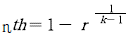
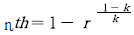
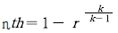
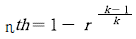
(정답률: 37%)
28. 브레이드 내부에 작은 공기 통로를 설치하여 브레이드 앞전을 향하여 공기를 충돌시켜 냉각하는 방법은?
- Transpiration
- Convection Cooling
- Impingement Cooling
- Film Cooling
(정답률: 58%)
29. 복식 연료 노즐에 설명 내용으로 가장 올바른 것은?
- 리버스 인젝션을 한다.
- 연료에 회전 에너지를 주면서 분사하는 것이다.
- 공기 흐름량과 압력에 따라 분사각을 변화시킨다.
- 낮은 흐름량일 때와 높은 흐름량일 때의 2단계의 분사를 한다.
(정답률: 57%)
30. 터빈 엔진에서 오염된 압축기 브레이드는 특히 무엇을 초래하는가?
- Low R.P.M
- High R.P.M
- Low E.G.T
- High E.G.T
(정답률: 66%)
31. 일반적으로 터보 제트기관의 제어방식에 대한 설명 내용으로 가장 올바른 것은?
- 기관 R.P.M 제어방식과 토오크 제어방식이 있다.
- 기관 R.P.M 제어방식과 기관 E.P.R 제어 방식이 있다.
- 기관 E.P.R 제어방식과 토오크 제어방식이 있다.
- 기관 E.P.R 제어방식과 드로틀 제어방식이 있다.
(정답률: 65%)
32. 왕복기관의 기화기에 고도와 온도변화에 따른 장비를 갖추지 않은 경우 혼합비는 어떻게 되겠는가?
- 고도나 온도가 증가하면 희박해 진다.
- 고도나 온도가 증가하면 농후해 진다.
- 고도가 증가하면 농후해지고, 온도가 증가하면 희박해진다.
- 고도가 증가하면 희박해 지고, 온도가 증가하면 농후해진다.
(정답률: 47%)
33. 피스톤의 지름이 10cm인 피스톤에 60kg/cm2의 가스압력이 작용하면 피스톤에 미치는 힘은 얼마인가?
- 47.1 ton
- 471 ton
- 41.5 ton
- 4.71 ton
(정답률: 49%)
34. 열효율 25%, 유효마력이 50마력(ps)인 내연기관의 총 발열량은 약 몇 kcal/h 인가? (단, 1마력은 75kg.m.sec, 열당량 A는 1/427kcal.m 이다.)
- 8.75
- 35
- 31,500
- 126,000
(정답률: 48%)
35. 이상기체의 상태방정식은 Pv = RT이다. 이것에 관한 설명 내용으로 틀린 것은?
- P : 기체의 절대압력(kg/m2)
- v : 비체적(m3/kg)
- R : 기체상수(kg.m/kg.k)
- T : 절대온도(R)
(정답률: 51%)
36. 왕복기관 엔진을 장착시키는 동안 마그네토 접지선을 접지시켜 놓는 가장 큰 이유는?
- 엔진 시동시 백화이어를 방지하기 위하여
- 엔진장착 동중 프로펠러를 돌리면엔진이 시동될 가능성이 있기 때문에
- 엔진을 마운트에 완전히 장착시킨 후 마그네토 접지선을 점검치 않기 위하여
- 점화 스위치가 잘못 놓일 수 있는 가능성 때문에
(정답률: 78%)
37. 왕복기관을 시동할 때 실린더 안에 직접 연료를 분사시켜 농후한 혼합가스를 만들어 줌으로써 시동을 쉽게하는 장치는?
- 프라이머
- 기화기
- 과급기
- 주연료 펌프
(정답률: 73%)
38. 엔탈피를 가장 올바르게 설명한 것은?
- 열역학 제 2법칙으로 설명된다.
- 이상기체만 갖는 성질이다.
- 모든 물질의 성질이다.
- 내부에너지와 유동일의 합이다.
(정답률: 72%)
39. 터보 팬 엔진에서 운항 중 새(bird)와 충격되어 엔진에 손상이 예상될 때 가장 적당한 검사방법은?
- 트랜드 모니터링 검사
- 시각 검사
- 보어스코프 검사
- 초음파 검사
(정답률: 73%)
40. 왕복기관의 흡입 및 배기밸브가 실제로 열리고 닫히는 시기로 가장 올바른 것은?
- 흡입밸브 : 열림/상사점, 닫힘/하사점
배기밸브 : 열림/하사점, 닫힘/상사점 - 흡입밸브 : 열림/상사점전,닫힘/하사점전
배기밸브 : 열림/하사점후,닫힘/상사점후 - 흡입밸브 : 열림/상사점전,닫힘/하사점전
배기밸브 : 열림/하사점전,닫힘/상사점후 - 흡입밸브 : 열림/상사점전,닫힘/하사점후
배기밸브 : 열림/하사점전,닫힘/상사점후
(정답률: 70%)
3과목: 항공기체
41. 비틀림 모멘트에 대한 식으로 가장 올바른 것은?
- 전단응력 * 극단면계수
- 전단응력 * 횡탄성계수
- 전단변형도 * 단면오차모멘트
- 굽힘응력 * 단면계수
(정답률: 60%)
42. 페일 세이프 구조의 백업구조를 가장 올바르게 설명한 것은?
- 많은 부재로 되어 있고 각각의 부재는 하중을 고르게 되도록 되어 있는 구조
- 하나의 큰부재를 사용하는 대신 2개 이상의 작은 부재를 결합하여 1개의 부재와 같은 또는 그 이상의 강도를 지닌 구조
- 규정된 하중은 모두 좌측 부재에서 담당하고 우측 부재는 예비 부재로 좌측 부재가 파괴된후 그 부재를 대신하여 전체하중을 담당한다.
- 단단한 보강재를 대어 해당량 이상의 하중을 이 보강재가 분담하는 구조
(정답률: 82%)
43. 일정한 단면을 갖는 보에서 분포하중 ｑ와 처짐 y와의 관계식으로 가장 올바른 것은? (단, E 는 탄성계수이고, I 는 관성모멘트이다.)
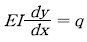
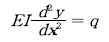
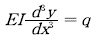
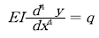
(정답률: 29%)
44. AN 501 B - 416 - 7의 B는 스크류의 무엇을 식별하는가?
- 2017 - T 알미늄 합금이다.
- 황동이다.
- 부식 저항 강이다.
- 머리에 구멍이 있다.
(정답률: 69%)
45. 이상적인 트러스 구조의 부재는 어느 하중을 받는가?
- 인장 또는 압축
- 굽힘
- 전단
- 인장 도는 굽힘
(정답률: 53%)
46. 키놀이 조종계통에서 승강키에 대한 설명으로 가장 올바른 것은?
- 보통 수평 안정판의 뒷전에 장착되어 있다.
- 수직축을 중심으로 좌,우로 회전하는 운동에 사용
- 보통 승강키의 조종은 페달에 의존한다.
- 세로축을 중심으로 하는 항공기 운동에 사용
(정답률: 72%)
47. 크리닝 아웃이 아닌 것은?
- 트리밍
- 커팅
- 화일링
- 크린업
(정답률: 66%)
48. 한쪽의 길이를 짧게하기 위해 주름지게하는 판금가공 방법은?
- 수축가공
- 신장가공
- 범핑
- 크림핑
(정답률: 71%)
49. 조종간을 후방 좌측으로 움직이면 우측 보조익과 승강타는 어떻게 움직이나?
- 보조날개는 아래로 승강타는 위로
- 보조날개는 아래로 승강타도 아래로
- 보조날개는 위로 승강타도 위로
- 보조날개는 위로 승강타는 아래로
(정답률: 58%)
50. 동체 구조에서 반 모노코크를 가장 올바르게 설명한 것은?
- 구조재가 삼각형을 이루는 기체의 뼈대가 하중을 담당하고 표피는 항공 역학적인 요구를 만족하는 기하학적 형태만을 유지하는 구조이다.
- 골격과 외피가 공히 하중을 담당하는 구조로서 외피는 주로 전단응력을 담당하고 골격은 인장,압축,굽힘등 모든 하중을 담당하는 구조이다.
- 하중의 대부분을 표피가 담당하며, 내부에 보강재가 없이 금속의 각 껍질로 구성된 구조이다.
- 동체 내부 공간을 확보하기 위하여 세로대 및 세로지를 이용한 구조이다.
(정답률: 68%)
51. V-n 선도에서의 n을 바르게 나타낸 것은? (단, L:양력,D:항력,T:추력,W:무게)
- L/W
- W/L
- T/D
- D/T
(정답률: 67%)
52. 일정한 응력이 가해질 때 시간에 따라 계속 변형율이 증가한다. 이와 같이 시간에 따라서 변형도가 달라지는 현상은?
- 천이점
- 피로
- 크리프
- 탄성
(정답률: 78%)
53. 티타늄합금의 성질을 설명한 내용으로 가장 올바른 것은?
- 티타늄은 고온에서 산소,질소,수소등과 친화력이 매우 크고 또한 이러한 가스를 흡수하면 매우 약해진다.
- 티타늄합금은 열전도 계수가 크다.
- 티타늄합금에는 Cu가 합금원소로써 몇%씩 포함하고 있어 취성을 감소시키는 역할을 한다.
- 티타늄 합금은 불순물이 들어가면 가공후 자연경화를 일으켜 강도를 좋게한다.
(정답률: 53%)
54. 두께가 3mm인 알루미늄판과 두께가 2mm인 알루미늄판을 리벳으로 접하고자 한다. 리벳은 얼마로 하면 되는가?
- 15mm
- 9mm
- 6mm
- 5mm
(정답률: 73%)
55. 알루미나 섬유의 특징으로 틀린 것은?
- 내열성이 뛰어나 공기중에서 1300°c로 가열해도 취성을 갖지 않는다.
- 표면처리를 하지 않아도 FRP나 FRM으로 할 수 있다.
- 전기,광학적 특징은 은백색으로 전기의 도체이다.
- 금속과가 수지와의 친화력이 좋다.
(정답률: 66%)
56. 알크래드 알루미늄을 올바르게 설명한 것은?
- 부식을 방지하기 위하여 알루미늄 합금판에 모재 두께의 한쪽면의 3~5%로 순 알루미늄으로 피막한 것이다.
- 부식을 방지하기 위하여 알루미늄 합금판에 모재 두께의 한쪽면의 3~5%로 순 마그네슘으로 도금한 것이다.
- 모재 두께의 한쪽면의 0~3%로 순 티타늄으로 피막한 것이다.
- 모재 두께의 한쪽면의 5~7%로 순 마그네슘으로 피막한 것이다.
(정답률: 79%)
57. 그림의 판재 굽힘에서 판재 전체의 길이는 약 얼마인가?
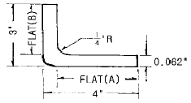
- 7.0인치
- 6.8인치
- 6.6인치
- 6.0인치
(정답률: 67%)
58. 와셔의 부품번호가 AN 960 J D 716 L 로 표기 되었다. L이 뜻하는 내용은?
- 재질
- 두께
- 표면처리
- 형식
(정답률: 34%)
59. 턴록 중에서 에어록 패스너의 구성요소가 아닌 것은?
- 스터드
- 스터드리셉터클
- 크로스핀
- 그로메트
(정답률: 50%)
60. 착륙장치는 장착위치에 따라 앞바퀴형과 뒷바퀴형이 있다. 다음 중 앞바퀴형의 장점이 아닌 것은?
- 동체 후방이 들려있기 때문에 착륙성능이 좋다.
- 중심이 주바퀴의 앞에 있어 지상전복의 위험이 적다.
- 제트기는 배기때문에 앞바퀴형이어야 한다.
- 이륙할 때 저항이 크므로 연료 소모가 적다.
(정답률: 69%)
4과목: 항공장비
61. 단거리 전파 고도계(LRRA)로 구할 수 잇는 고도는?
- 진고도
- 절대고도
- 기압고도
- 마찰고도
(정답률: 47%)
62. 화재탐지계통에 대한 설명 내용으로 가장 올바른 것은?
- 감지기의 kink,dent등은 허용범위 이내라도 수정하는 것이 비람직하다.
- 감지기의 Connection을 분리했을때는 반드시 Cooper Crush Gasket을 교환해야 한다.
- 감지기의 절연저항 Check은 Multi-Meter면 충분하다.
- Ionization Smoke Detector 는 수리를 위해서 Line에서 분해할 수 있다.
(정답률: 70%)
63. 대형 항공기의 공기조화 계통에서 가열 계통에는 연소가열기를 장치하여 사용한다. 온도가 규정값 이상에 도달하게 되면 연소가열에 공급되는 연료를 자동차단 시킬 수 있는 밸브 장치는?
- 솔레노이드밸브
- 조정유닛밸브
- 스필밸브
- 버터플라이식밸브
(정답률: 71%)
64. 공,유압 계통도에서 다운 스트림을 가장 올바르게 설명한 것은?
- 어떤 밸브를 기준으로 배출방향쪽
- 어떤 밸브를 기준으로 유입구쪽
- 밸브의 내부흐름
- 어떤 밸브를 기준으로 하부흐름
(정답률: 56%)
65. 계기 착륙장치의 구성장치가 아닌 것은?
- 로칼라이저 수신장치
- 글라이드 슬롭 수신장치
- 마커 수신장치
- 기상 레이더
(정답률: 89%)
66. 항공기 기관의 구동축과 발전기축 사이에 장착하여 주파수를 일정하게 하여 주는 장치를 무엇이라 하는가?
- 정속구동장치
- 변속구동장치
- 출력구동장치
- 주파수구동장치
(정답률: 73%)
67. 항법장비 중에서 지상의 무선국이 없어도 되는 것은?
- ADF
- VOR
- LORAN
- INS
(정답률: 59%)
68. air cycle cooling system에서 terbine의 주역활은?
- compressor에서 압축된 공기가 turbine에서 팽창압력과 온도가 낮아지게 한다.
- turbine에서 공기를 고압,고온으로 만들어 compressor에 보낸다.
- colling fan을 동작시킨다.
- heat exchanger용 냉각공기를 끌어들이는 fan 을 동작시킨다.
(정답률: 55%)
69. 속도계의 색표식 중에서 POWER-OFF,FLAP-UP, STALL SPEED는 어디에 표시되어 있는가?
- 적색방사선
- 녹색호선
- 황색호선
- 백색호선
(정답률: 68%)
70. 항공기의 수직방향 속도를 분담 FEET로 지시하는 계기는 어느 것인가?
- VSI
- LRRA
- DME
- HSI
(정답률: 72%)
71. 전원 전압 115/200 V에 10μF의 콘덴서, 250mH의 코일이 직렬로 접속되어 있을 때 이 회로의 공진 주파수를 구하면?
- 0.04Hz
- 25.0Hz
- 100.7Hz
- 2500.0Hz
(정답률: 53%)
72. 그림과 같은 회로망에서 전류계와 전압계로서 각 단의 전류 전압을 측정하려 한다. 연결이 바르게 된 것은?
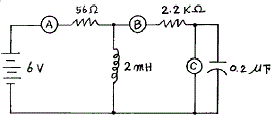
- Ⓐ와 Ⓑ는 전압계 Ⓒ는 전류계
- Ⓐ와 Ⓑ는 전류계 Ⓒ는 전압계
- Ⓐ는 전류계, Ⓑ와Ⓒ는 전압계
- Ⓐ와 Ⓒ는 전류계 Ⓑ는 전압계
(정답률: 57%)
73. 광물섬유에 사용되는 seal 은?
- 천연고무
- 일반고무
- 네오프렌 합성고무
- 뷰틸합성고무
(정답률: 70%)
74. 자기 컴퍼스의 동적오차의 종류에 해당되지 않은 것은?
- 사분원차
- 북선오차
- 가속도오차
- 와동오차
(정답률: 56%)
75. 8[kΩ]의 저항에 50[mA]의 전류를 흘리는데 필요한 전압[V]은 얼마인가?
- 360
- 380
- 400
- 420
(정답률: 83%)
76. 자이로에 관한 설명 내용으로 틀린 것은?
- 강직성은 자이로 로추터의 질량이 커질수록 강하다.
- 강직성은 자이로 로우터의 회전이 빠를수록 강하다.
- 섭동성은 가해진 힘의 크기에 반비례하고 로우터의 회전속도에 비례한다.
- 자이로를 이용한 계기로는 선회경사계,방향자이로지시계,자이로 수평지시계가 있다.
(정답률: 62%)
77. 전동기에서 시동특성이 가장 좋은 것은?
- 직,병렬모터
- 분권모터
- 션트모터
- 직권모터
(정답률: 80%)
78. 유압계통 에서 블리드를 하는 주 목적은?
- 계통에서 공기를 제거하기 위해
- 계통의 누출을 방지하기 위해
- 계통의 압력손실을 방지하기 위해
- 씰의 손상을 방지하기 위해
(정답률: 63%)
79. 연축전지에 대한 설명 내용으로 가장 올바른 것은?
- 축전지의 충전상태는 전해액의 온도로 측정한다.
- 축전지 여러개를 충전할 때 정전류법은 병렬로 연결하여 충전한다.
- 축전지 여러개를 충전할 때 정전압법은 병렬로 연결하여 충전한다.
- 정전류법으로 충전할 때에는 반드시 시작전에 캡을 닫아 놓아야 한다.
(정답률: 59%)
80. 고도계의 보정방법중 활주로에서 고도계가 활주로 표고를 가리키도록 하는 보정방법은 무엇인가?
- QNE 보정
- QNH 보정
- QFE 보정
- QFH 보정
(정답률: 46%)